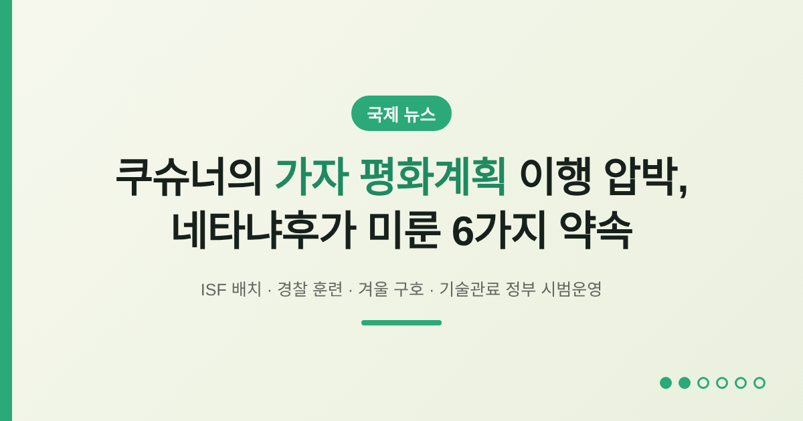
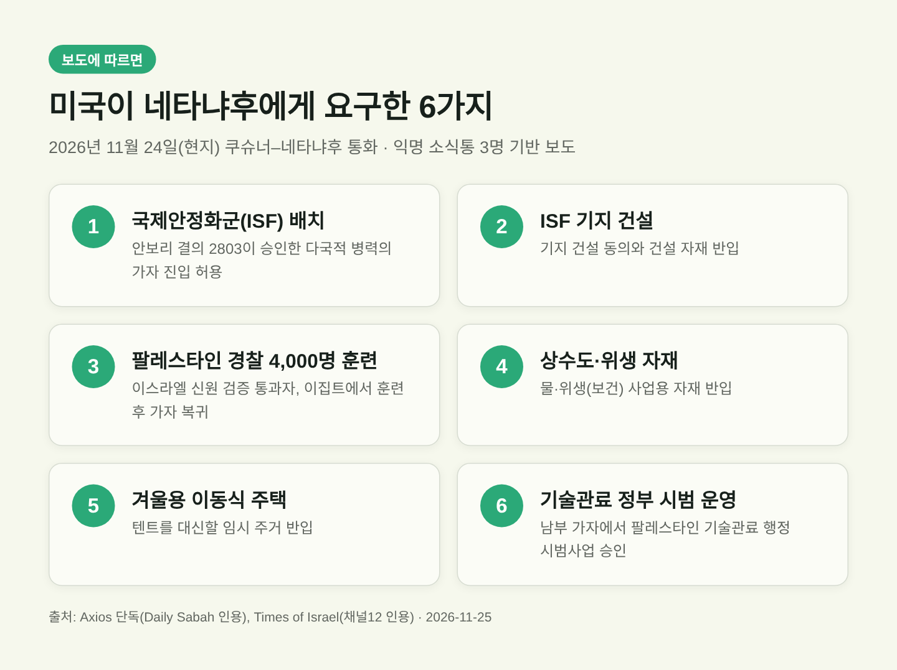
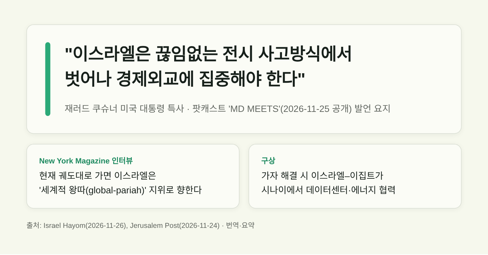
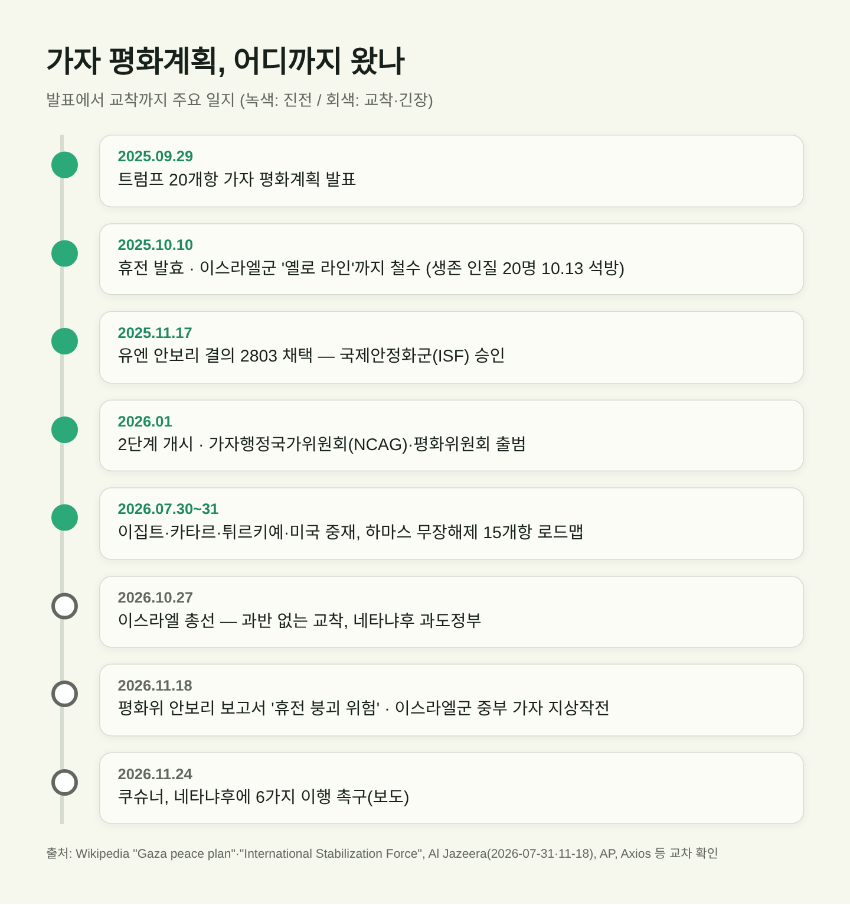
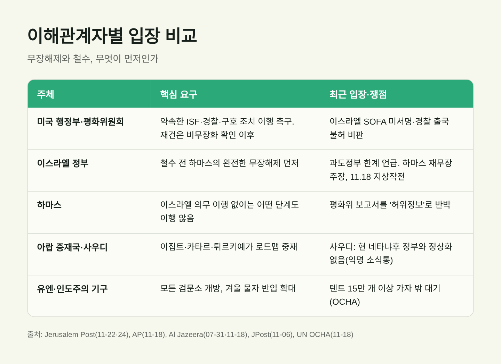
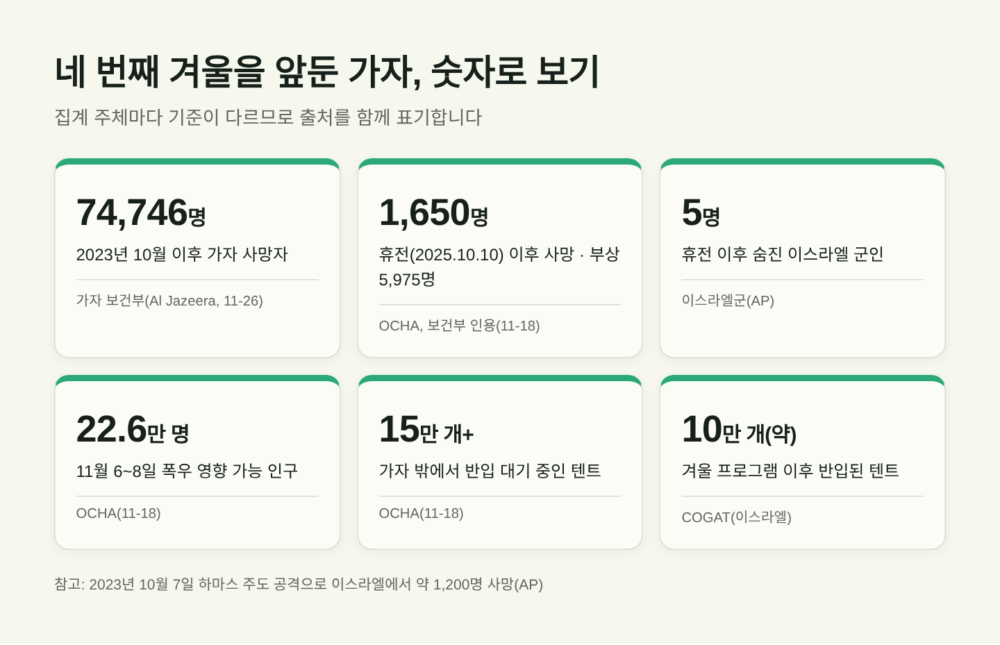
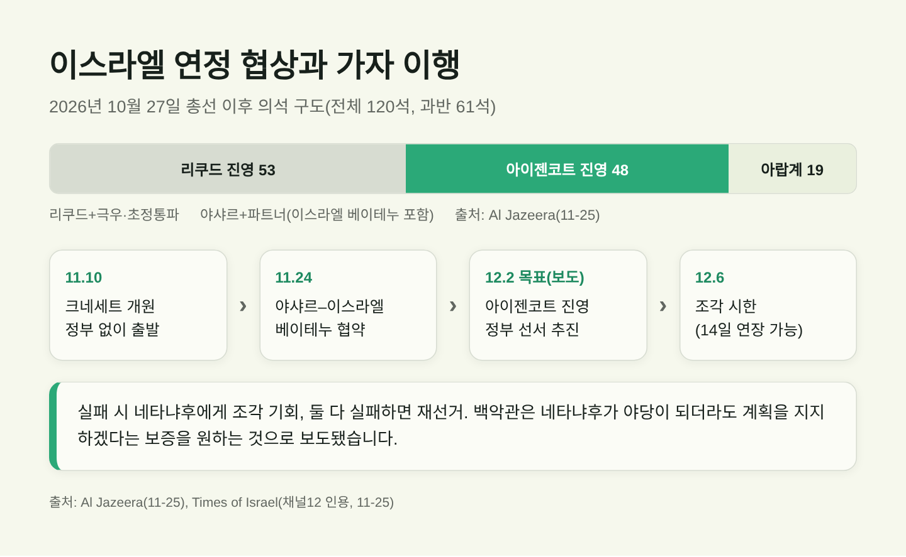

쿠슈너의 가자 평화계획 이행 압박, 네타냐후가 미룬 6가지 약속

이번 글에서는 재러드 쿠슈너 미국 대통령 특사가 네타냐후 이스라엘 총리에게 가자 평화계획 이행을 촉구했다는 보도를 정리해 보겠습니다. 미국이 구체적으로 무엇을 요구했는지, 이행이 왜 막혀 있는지, 이스라엘 연정 협상이 어떤 변수가 되는지를 차례로 짚습니다.
세 줄 요약
- 보도에 따르면 쿠슈너는 11월 24일(현지) 통화에서 ISF 배치, 팔레스타인 경찰 훈련 등 6가지 이행을 요구했고, 네타냐후는 진행 의사를 내비쳤습니다.
- 평화위원회는 이스라엘과 하마스 모두 약속을 지키지 않아 휴전이 붕괴 위험에 있다고 경고했습니다.
- 과도정부 상태인 이스라엘의 연정 협상 결과가 이행 속도를 가를 가능성이 큽니다.
■ 무슨 일이 있었나 — 화요일 밤의 통화
미국 매체 Axios는 11월 25일 단독 보도를 냈습니다. 쿠슈너 특사가 하루 전 네타냐후 총리와 통화하며 트럼프 대통령에게 한 가자 관련 약속을 지키라고 촉구했다는 내용입니다. 이 보도는 통화 내용을 아는 익명 소식통 3명을 근거로 합니다. 백악관은 통화를 공식 확인하거나 세부 내용을 공개하지 않았습니다.
보도에 따르면 미국이 요구한 사항은 여섯 가지입니다. 이스라엘 채널12를 인용한 Times of Israel의 보도도 거의 같은 목록을 전합니다.
- 국제안정화군(ISF)의 가자 배치 허용
- ISF 기지 건설과 건설 자재 반입 동의
- 이스라엘의 신원 검증을 통과한 팔레스타인 경찰 지원자 4,000명이 이집트에서 훈련받고 돌아오도록 허용
- 상수도·위생 관련 자재 반입
- 겨울용 이동식 주택 반입
- 남부 가자에서 팔레스타인 기술관료 정부의 시범 운영 승인

네타냐후 쪽 반응은 신중하지만 열려 있었습니다. 총리실은 Ynet 등에 "건설적인 대화"였다며 인도적 지원과 겨울 대비를 논의했고 계속 협력하기로 했다고 밝혔습니다. Times of Israel이 인용한 소식통은 네타냐후가 "계획을 진행하겠다"는 뜻을 전했다고 말했습니다. 평화위원회 측 소식통도 i24NEWS에 "곧 진전을 기대한다"고 했습니다. 다만 "현재 발표할 합의는 없다"는 말도 함께 나왔습니다. 진전 여부는 향후 며칠 이스라엘의 실제 행동으로 판가름 날 것이라는 게 양측 공통된 설명입니다.
■ 왜 중요한가 — '과도정부라 못 한다'는 논리
이번 통화에서 눈길을 끄는 대목은 네타냐후의 이전 해명입니다. Times of Israel과 Daily Sabah가 전한 소식통 발언에 따르면, 네타냐후는 최근 트럼프 대통령과의 통화에서 자신이 과도정부 총리라 가자 조치를 승인할 수 없다고 말했다고 합니다. 같은 소식통은 그가 이란과의 전쟁에는 문제가 없다는 태도를 보였다며 "진지한 주장이 아니었다"고 평가했습니다.
미국이 받아들이지 않는 이유가 여기에 있습니다. 전쟁 결정은 할 수 있는데 구호품과 경찰 훈련 승인은 못 한다는 논리는 앞뒤가 맞지 않는다는 것입니다. Times of Israel 보도에 따르면 백악관은 네타냐후가 머지않아 야당 대표가 되더라도 이 계획을 지지하겠다는 보증까지 원하고 있습니다. 미국이 이스라엘 정권 교체 가능성까지 염두에 두고 있다는 신호로 읽힙니다.
쿠슈너의 공개 발언도 수위가 높아졌습니다. 그는 통화 직전 공개된 New York Magazine 인터뷰에서 이스라엘이 갈림길에 서 있다고 했습니다. 10월 7일 이후 더 안전하고 세계와 통합된 나라가 되거나, 현재 궤도대로 "세계적 왕따(global-pariah) 지위"로 향하거나 둘 중 하나라는 것입니다.
이어 11월 25일 공개된 팟캐스트 'MD MEETS'에서는 이스라엘이 "끊임없는 전시 사고방식에서 벗어나" 경제외교에 집중해야 한다고 말했습니다(Israel Hayom 보도). 가자 문제가 풀리면 이스라엘과 이집트가 시나이반도에서 데이터센터와 에너지 사업을 함께하는 "따뜻한 평화"가 가능하다는 구상도 내놓았습니다.

■ 배경 — 20개항 계획은 어디까지 왔나
가자 평화계획은 2025년 9월 29일 트럼프 대통령이 발표한 20개항 구상에서 출발합니다. 10월 10일 휴전이 발효됐고, 이스라엘군은 이른바 '옐로 라인'까지 물러났습니다. 생존 인질 20명이 10월 13일 풀려났고, 이스라엘은 팔레스타인 수감자 약 2,000명을 석방했습니다. 마지막 사망 인질 유해는 2026년 1월 26일 수습됐습니다.
이후 제도의 틀은 차례로 만들어졌습니다. 2025년 11월 유엔 안보리 결의 2803이 ISF를 승인했고, 2026년 1월에는 2단계 개시와 함께 가자행정국가위원회(NCAG)와 트럼프가 의장인 평화위원회(Board of Peace)가 출범했습니다. 2월 2일에는 라파 검문소가 다시 열렸습니다.
가장 큰 고비는 하마스 무장해제였습니다. 7월 말 이집트·카타르·튀르키예·미국의 중재로 15개항 무장해제 로드맵이 마련됐습니다. 무장해제 진척에 맞춰 이스라엘군이 단계적으로 철수하고, 중화기와 터널부터 처리하는 방식입니다. 미국 당국자는 비무장화에 200~300일이 걸릴 수 있다고 봤습니다(Al Jazeera 보도).

문제는 서명과 이행 사이의 간극입니다. 쿠슈너 스스로 "서명된 합의와 실제 무기 회수 사이에는 또 한 단계가 있다"고 인정했습니다. 평화위원회가 11월 중순 안보리에 낸 두 번째 반기 보고서에 따르면, 기술관료위원회는 아직 가자에 들어가지 못했고 ISF도 배치되지 않았습니다. 보고서는 가시적 성과 없이는 휴전이 "무기한 지속될 수 없다"고 경고했습니다.
■ 쟁점 — 누가 무엇을 지키지 않았나
평화위원회 보고서는 양쪽 모두를 지적했습니다(AP 보도). 이스라엘에 대해서는 팔레스타인 민간경찰의 훈련·배치 결정이 없고, 물자 반입 제한으로 홍수 대비가 늦어졌다고 봤습니다. 하마스에 대해서는 이스라엘군을 향한 공격을 이어가고 가자로 들어오는 물자에 세금을 걷는다고 비판했습니다.
평화위원회의 조시 그루언바움 수석고문은 Jerusalem Post 인터뷰에서 더 직설적이었습니다. 이스라엘이 ISF 운영에 필요한 주둔군지위협정(SOFA)에 서명하지 않았고, 신원 검증을 마친 경찰의 훈련 출국도 막고 있다고 했습니다. 그는 네타냐후가 '쉬운 길'도 '어려운 길'도 아닌 '어느 길도 아닌' 쪽을 택했다고 꼬집었습니다. 동시에 재건은 비무장화가 확인되기 전에는 시작하지 않는다는 원칙도 분명히 했습니다.
이스라엘의 입장은 다릅니다. COGAT(이스라엘 민간업무조정관실)의 요람 할레비 소장은 하마스가 무장해제를 거부하는 한 장기 해법이 없는 책임은 하마스에 있다고 말했습니다. 이스라엘 정치 소식통은 7월 로드맵 당시부터 철수 전에 완전한 무장해제가 먼저라고 요구해 왔습니다. 이스라엘군은 11월 18일 옐로 라인 서쪽 중부 가자에서 휴전 이후 첫 공개 지상작전을 벌이며, 하마스가 재무장하고 공격을 늘렸다는 이유를 댔습니다. 이스라엘 카츠 국방장관은 하마스가 해체되기 전에는 철수하지 않겠다고 밝혔습니다.
하마스 측은 정반대 시각입니다. 7월 로드맵 협상단의 가지 하마드는 이스라엘이 의무를 이행하지 않으면 어떤 단계도 이행하지 않겠다고 했습니다. 하마스 고위 인사 바셈 나임은 평화위원회 보고서를 "순전한 허위정보"라고 반박했습니다. 11월 18일 지상작전에 대해서는 "위험한 확전"이라며 중재국의 개입을 요구했습니다. 이번 쿠슈너 통화에 대한 하마스의 공식 반응은 확인되지 않았습니다.

■ 인도적 상황 — 네 번째 겨울을 앞둔 가자
수치는 출처마다 기준이 다르므로 출처를 함께 적습니다. 가자 보건부는 2023년 10월 이후 사망자를 74,746명으로 집계했습니다(Al Jazeera, 11월 26일). 휴전 이후 사망자는 1,600명을 넘었고, 유엔 인도주의업무조정국(OCHA)은 보건부 자료를 인용해 11월 중순 기준 1,650명 사망, 5,975명 부상으로 정리했습니다. 이스라엘군은 휴전 이후 자국 군인 5명이 숨졌다고 밝혔습니다. 2023년 10월 7일 하마스 주도 공격으로는 이스라엘에서 약 1,200명이 숨졌습니다.
겨울 피해는 이미 시작됐습니다. OCHA에 따르면 11월 6~8일 폭우로 약 22만 6천 명이 영향을 받았을 수 있고, 쉘터 4만 개 이상이 손상됐습니다. 텐트 15만 개 이상이 가자 밖, 주로 이집트 알아리시에서 반입을 기다리고 있습니다. 일부 품목은 이스라엘 당국이 '이중용도'로 분류해 들어가지 못합니다.
이스라엘 측 설명도 있습니다. COGAT은 겨울 지원 프로그램 이후 텐트 약 10만 개와 겨울 물자 트럭 9,000대 이상이 들어갔다고 밝혔습니다. 다만 재건 장비는 하마스가 완전히 무장해제한 뒤에야 허용한다는 입장입니다.

통제 지역도 변수입니다. 옐로 라인은 처음 가자의 약 53%를 이스라엘 통제 아래 두는 선이었습니다. 이후 여러 차례 서쪽으로 옮겨졌고, Al Jazeera는 현재 약 3분의 2에 이른다고 전합니다. AP는 200만 명이 넘는 주민이 영토의 약 3분의 1에서 주로 텐트에 머문다고 보도했습니다.
■ 이스라엘 연정 협상 — 이행의 열쇠를 쥔 국내 정치
10월 27일 총선에서 어느 블록도 과반 61석을 얻지 못했습니다. Al Jazeera 집계로 리쿠드와 극우·초정통파 진영은 53석, 아이젠코트의 야샤르와 파트너는 48석, 아랍계 정당은 19석입니다. 헤르초그 대통령은 아이젠코트에게 조각을 맡겼고, 시한은 12월 6일이며 14일 연장할 수 있습니다.
11월 24일 야샤르는 리베르만의 이스라엘 베이테누와 첫 연정 협약에 서명했습니다. 아이젠코트 진영은 이르면 다음 주 수요일 정부 선서를 목표로 한다는 보도가 나왔습니다(채널12, Times of Israel 인용). 반면 리쿠드와의 통합정부 대화가 병행되면서 골란의 민주당이 협상을 동결하는 등 내부 균열도 보입니다.

예전엔 '네타냐후가 결심하면 움직인다'는 구도였습니다. 지금은 누가 다음 정부를 이끄느냐가 먼저 정리돼야 하는 상황입니다. 쿠슈너는 아이젠코트가 가자 문제를 우선하겠다고 "매우 긍정적으로" 말했다며, 누가 총리가 되든 가자를 우선할 것이라고 기대를 보였습니다. 하지만 아이젠코트 정부가 실제로 출범할지, 출범해도 소수 정부의 한계를 넘을지는 아직 알 수 없습니다.
■ 아랍 중재국과 사우디 — 정상화 카드의 조건
이집트·카타르·튀르키예는 7월 로드맵을 중재했고, 이집트는 엘아리시에 ISF 지휘센터 설치에 착수한 바 있고, 가자로 들어갈 구호 물자 상당수도 이집트 쪽에서 대기 중입니다. 쿠슈너가 말한 이집트와의 경제협력 구상도 결국 가자 해결을 전제로 합니다.
사우디는 더 분명한 선을 그었습니다. Jerusalem Post가 전한 사우디 측 익명 소식통은 "네타냐후가 현 정부와 함께 집권하는 한 정상화는 의제가 아니다"라고 말했습니다. 리야드는 두 국가 해법 원칙을 받아들이는 이스라엘 정부를 원한다는 설명입니다. 10월 25일에는 사우디·튀르키예·이집트·파키스탄이 이스라엘을 역내 불안정의 근본 원인으로 지목한 공동성명을 냈습니다.
팔레스타인 자치정부(PA)는 평화계획상 개혁을 전제로 장래 역할이 열려 있습니다. 다만 쿠슈너는 팟캐스트에서 PA를 "매우 부패하고 비효율적"이라고 평가해, 미국이 당장 PA에 큰 역할을 맡길 가능성은 낮아 보입니다.
■ 앞으로의 전망 — 며칠 안에 드러날 시험대
단기적으로 볼 지표는 세 가지입니다.
- 겨울 구호 반입: 이동식 주택과 상하수도 자재가 실제로 들어가는지가 가장 빠른 신호입니다.
- ISF와 경찰: SOFA 서명, 기지 건설 승인, 경찰 4,000명 훈련 출국이 이뤄지는지입니다.
- 연정 결과: 12월 6일 조각 시한과 그 전후 정부 선서 표결이 계획의 지속성을 좌우합니다.
낙관할 근거는 있습니다. 양측 모두 대화를 "건설적"이라 표현했고, 평화위원회는 진전을 기대한다고 했습니다. 한계도 분명합니다. 이스라엘은 철수 전 완전한 무장해제를, 하마스는 무장해제 전 이스라엘의 의무 이행을 요구하는 '선후 문제'가 그대로입니다. 11월 18일 지상작전처럼 현장 충돌이 이어지면 합의문은 다시 종이에 머물 수 있습니다.
정리하면 이렇습니다. 이번 통화는 새로운 합의가 아니라, 이미 한 약속을 지키라는 독촉입니다. "서명과 이행 사이의 한 단계"를 누가 먼저 밟느냐가 남은 과제입니다.
가자 평화계획이 이번 겨울을 넘길 수 있겠느냐고 물으신다면, 그 답은 앞으로 며칠 이스라엘의 결정과 연정의 향방에 달려 있다고 답하겠습니다.
참고자료
- Axios — "Scoop: Kushner urges Netanyahu to make good on Gaza commitments" (2026-11-25) https://www.axios.com/2026/11/25/kushner-presses-netanyahu-gaza-peace-plan
- Political Wire — "Kushner Urges Netanyahu to Make Good On Gaza Plan" (2026-11-25) https://politicalwire.com/2026/11/25/kushner-urges-netanyahu-to-make-good-on-gaza-plan/
- Times of Israel — "Report: Netanyahu indicated to Kushner he is willing to move forward on Gaza plan" (2026-11-25) https://www.timesofisrael.com/liveblog_entry/report-netanyahu-indicated-to-kushner-he-is-willing-to-move-forward-on-gaza-plan/
- Times of Israel — Liveblog, November 25, 2026 https://www.timesofisrael.com/liveblog-november-25-2026/
- Anadolu Agency — "US urges Netanyahu to honor Gaza peace plan commitments: Report" (2026-11-25) https://aa.com.tr/en/middle-east/us-urges-netanyahu-to-honor-gaza-peace-plan-commitments-report/4137967
- Daily Sabah — "US presses Israel's Netanyahu to honor Gaza peace commitments" (2026-11-25) https://www.dailysabah.com/world/americas/us-presses-israels-netanyahu-to-honor-gaza-peace-commitments
- Ynet — "After 'pariah state' warning, Kushner presses Netanyahu to implement Trump's Gaza plan" (2026-11-25) https://www.ynetnews.com/article/hjalan4jxx
- i24NEWS — "Kushner pushes Netanyahu to approve Gaza multinational force, expand humanitarian aid" (2026-11-25) https://www.i24news.tv/en/news/israel/diplomacy/artc-kushner-pushes-netanyahu-to-approve-gaza-multinational-force-expand-humanitarian-aid
- Israel Hayom — "Kushner: Israel needs to get out of the constant wartime mindset" (2026-11-26) https://www.israelhayom.com/2026/11/26/kushner-israel-needs-to-get-out-of-the-constant-wartime-mindset/
- Jerusalem Post — "Jared Kushner: 'Israel could become global pariah if it continues current Gaza course'" (2026-11-24) https://www.jpost.com/american-politics/article-915887
- Jerusalem Post — "Board of Peace urges Israel to advance Hamas disarmament framework" (2026-11-22) https://www.jpost.com/middle-east/article-915703
- Jerusalem Post — "Board of Peace says Hamas agrees to disarm amid int'l efforts to establish gov't" (2026-11-24) https://www.jpost.com/middle-east/article-915924
- HNGN(AP) — "Israeli Tanks Push Into Central Gaza as Board Warns of Collapse" (2026-11-18) https://www.hngn.com/articles/273864/20261118/israeli-tanks-push-central-gaza-board-warns-collapse.htm
- Al Jazeera — "What does Israel's new ground offensive mean for Palestinians in Gaza?" (2026-11-18) https://www.aljazeera.com/news/2026/11/18/what-does-israels-new-ground-offensive-mean-for-palestinians-in-gaza
- Al Jazeera — "Gaza Board of Peace announces Hamas disarmament agreement: What we know" (2026-07-31) https://www.aljazeera.com/news/2026/7/31/gaza-board-of-peace-announces-hamas-disarmament-agreement-what-we-know
- The New Arab — "Egypt to host Gaza mediators after Hamas disarmament notice" (2026-07-31) https://www.newarab.com/news/egypt-host-gaza-mediators-after-hamas-disarmament-notice
- Al Jazeera — "Israel's Eisenkot secures first coalition partner in bid to form government" (2026-11-25) https://www.aljazeera.com/news/2026/11/25/israels-eisenkot-secures-first-coalition-partner-in-bid-to-form-government
- Jerusalem Post — "Israel-Saudi Arabia normalization cannot happen under Benjamin Netanyahu, source says" (2026-11-06) https://www.jpost.com/middle-east/article-914042
- UN OCHA — "Humanitarian Situation Report, 18 November 2026" https://www.ochaopt.org/content/humanitarian-situation-report-18-november-2026
- Al Jazeera — "Winter rains threaten 1,000 Gaza shelter sites, councils warn" (2026-11-25) https://www.aljazeera.com/news/2026/11/25/winter-rains-threaten-1000-gaza-shelter-sites-councils-warn
- Al Jazeera — "Israeli attacks on Gaza kill senior education official, seven other people" (2026-11-26) https://www.aljazeera.com/news/2026/11/26/israeli-attacks-on-gaza-kill-senior-education-official-seven-other-people
- Wikipedia — "Gaza peace plan", "Yellow Line (Gaza)", "International Stabilization Force" (배경 참고, 1차 보도로 교차 확인)